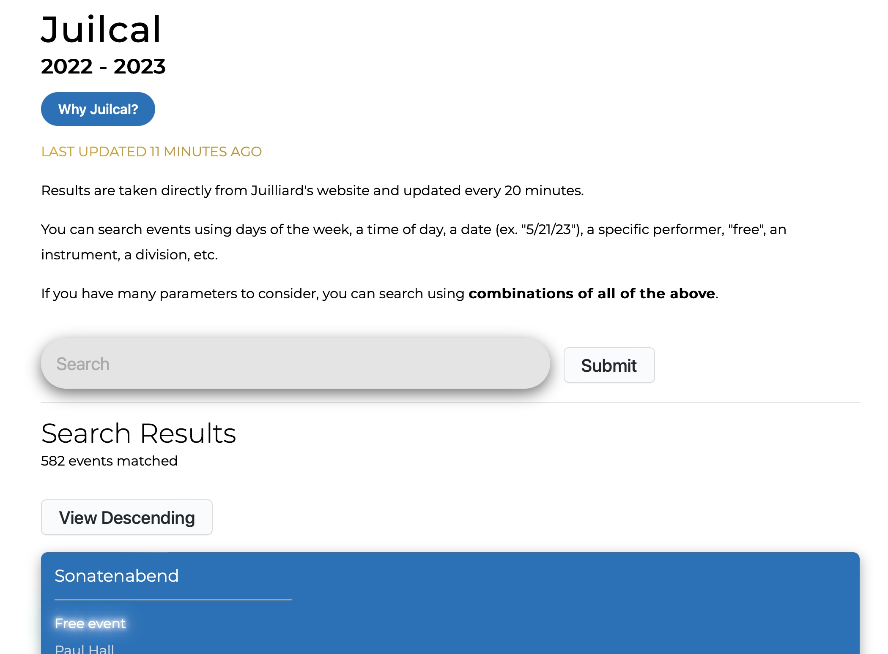
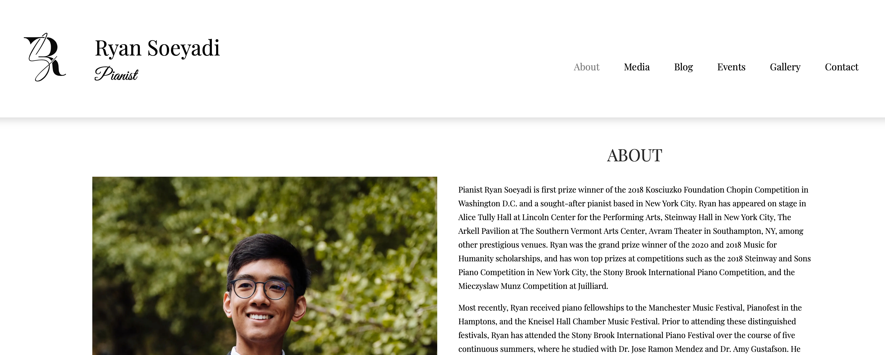
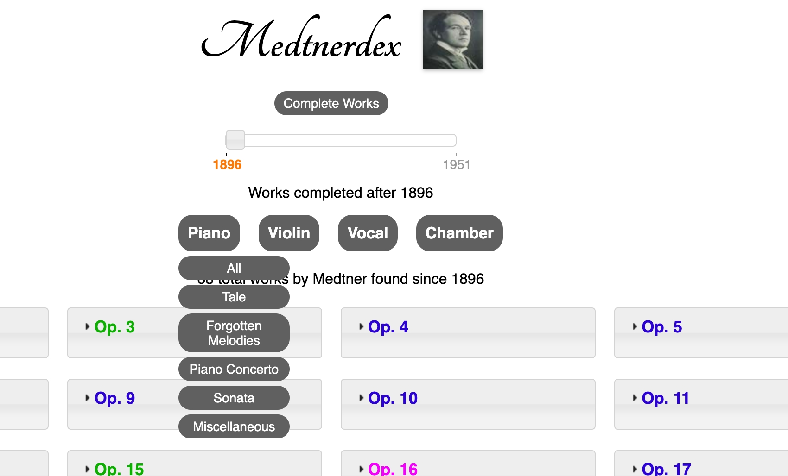

Juilcal is a lightweight, filtered search web application for Juilliard’s performance calendar. I built a REST API using Flask that allows for users to enter multiple keywords when querying events. Data is fetched through a Python web scraper that I wrote to save all Juilliard events into database using BeautifulSoup4 and SQLite3.
I designed and developed my professional pianist website to present biographical information, photos, videos, blogs, and more using GatsbyJS and React. The frontend is connected to Contentful to allow for simple content management actions.
The Medtnerdex is a small tool built using jQuery and vanilla HTML/CSS to organize Nikolai Medtner's compositional output. The works are stored in JSON format on Google Firebase for easy filtering of works. You are able to view works organized according to dates and genres using the slider and drop-down menus.
